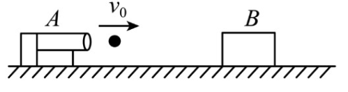
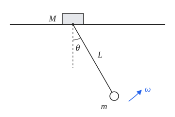

<meta data-alternate="https://freshmark.sunisalex.org/en/" data-article="true" data-canonical="https://freshmark.sunisalex.org/posts/physics/kinetic-konig-theroem/" data-description="推导动能的科尼希定理，由此得到刚体动能、常见物体的转动惯量与平行轴定理，并用于完全非弹性碰撞的动能损失和椭圆摆问题" data-freshmark-page data-title="动能科尼希定理 — Freshmark"><main><header class="container article-header"><a href="/" class="back-link">← 返回全部文章</a><p class="eyebrow article-subject">物理</p><h1>动能科尼希定理</h1><p class="article-dek">推导动能的科尼希定理，由此得到刚体动能、常见物体的转动惯量与平行轴定理，并用于完全非弹性碰撞的动能损失和椭圆摆问题</p><div class="article-meta"><time datetime="2026-11-01">2026年11月1日</time><span>4 分钟阅读</span><span class="view-count" data-article-view-count hidden>本文访问量 <strong data-article-views></strong></span><a href="index.md" download>下载 Markdown</a><button type="button" class="article-share" data-share-article data-share-text="推导动能的科尼希定理，由此得到刚体动能、常见物体的转动惯量与平行轴定理，并用于完全非弹性碰撞的动能损失和椭圆摆问题" data-share-title="动能科尼希定理"><span data-share-label>分享文章</span></button><output aria-live="polite" class="visually-hidden" data-share-status role="status"></output></div></header><div class="article-wrap"><aside class="toc"><div class="toc-head"><p>本文目录</p><button type="button" class="toc-toggle" aria-expanded="false" aria-label="展开或收起目录" data-toc-toggle><span class="toc-toggle-label">目录</span><span class="toc-toggle-icon" aria-hidden="true"></span></button></div><nav aria-label="目录" class="toc-links" data-toc-links><a href="#wikipedia" class="toc-level-2">Wikipedia</a><a href="#推导" class="toc-level-2">推导</a><a href="#常见物体的转动惯量" class="toc-level-2">常见物体的转动惯量</a><a href="#平行轴定理的推导" class="toc-level-3">平行轴定理的推导</a><a href="#应用" class="toc-level-1">应用</a><a href="#二体完全非弹性碰撞的动能损失" class="toc-level-2">二体完全非弹性碰撞的动能损失</a><a href="#多选题" class="toc-level-3">多选题</a><a href="#椭圆摆问题" class="toc-level-2">椭圆摆问题</a><a href="#追问小球的运动轨迹" class="toc-level-3">追问：小球的运动轨迹</a><a href="#总结" class="toc-level-2">总结</a></nav></aside><article class="prose"><p>多质点系统的运动往往很复杂，但总可以拆成两部分：整体随质心的平动，以及各部分相对质心的运动。科尼希定理说明，动能也能这样干净地拆开。本文先推导这一定理，由此得到刚体的动能公式、转动惯量与平行轴定理，最后用它处理两个典型问题：完全非弹性碰撞的动能损失，以及椭圆摆。</p><h2 id="wikipedia">Wikipedia</h2><p>柯尼希定理（König's theorem）是多质点系统在古典力学中的一个基本定理。它的内容是：相对于<strong>某个惯性坐标系</strong>的多质点系统的<strong>总动能</strong>等于该系统相对于该坐标系的<strong>质心动能</strong>加上<strong>相对于该系统质心坐标系的系统总动能</strong>（应注意：系统质心坐标系不一定是惯性坐标系）。</p><h2 id="推导">推导</h2><p>我们把质点的速度分解为质心速度+相对质心速度： <span class="math-expression math-display" data-math-source="E_{k_{total}}=\sum \frac{1}{2}m_iv_i^2\\
=\sum \frac{1}{2}m_i(\vec{v}_c+\vec{v}_{ic})^2\\
=\frac{1}{2}(\sum m_i)v_c^2+\sum \frac{1}{2}m_iv_{ic}^2+(\sum m_i\vec{v}_{ic})\cdot\vec{v}_c" data-math-display></span> 质心定义： <span class="math-expression math-display" data-math-source="\vec{r}_c=\frac{\sum{m_i\vec{r}_i}}{\sum m_i}\\
\vec{v}_c=\frac{\sum{m_i\vec{v}_i}}{\sum m_i}\\
\vec{v}_{ic}=\vec{v}_i-\vec{v}_c\\
\sum {m_i\vec{v}_{ic}}=\sum {m_i\vec{v}_i}-(\sum m_i)\vec{v}_c=\vec{0}" data-math-display></span> 这表明，在质心系中，质心动量为0. <span class="math-expression math-display" data-math-source="E_{k_{total}}=\frac{1}{2}(\sum m_i)v_c^2+\sum \frac{1}{2}m_iv_{ic}^2\\
=E_{k_c}+E_{k_{rel}}" data-math-display></span> 结果可谓强大：将质点系的总动能抽离为质心动能和相对动能 如果刚体绕过质心的轴以角速度<span class="math-expression math-inline" data-math-source="\vec{\omega}"></span>旋转，则<span class="math-expression math-inline" data-math-source="\vec{v}_{ic}=\vec{\omega}\times\vec{r}_i"></span>，<span class="math-expression math-inline" data-math-source="v_{ic}=\omega r_i"></span>（<span class="math-expression math-inline" data-math-source="r_i"></span>为质点到转轴的垂直距离），总动能: <span class="math-expression math-display" data-math-source="E_{k_{total}}=\frac{1}{2}(\sum m_i)v_c^2+\sum \frac{1}{2}m_iv_{ic}^2\\
=\frac{1}{2}(\sum m_i)v_c^2+ \frac{1}{2}\sum m_i|\vec{\omega}\times\vec{r}_i|^2\\
=\frac{1}{2}(\sum m_i)v_c^2+ \frac{1}{2}\sum m_i(\omega r_i)^2\\
=\frac{1}{2}(\sum m_i)v_c^2+ \frac{1}{2}(\sum m_ir_i^2)\omega^2\\
=\frac{1}{2}Mv_c^2+\frac{1}{2}I\omega^2" data-math-display></span> 其中<span class="math-expression math-inline" data-math-source="I=\sum m_ir_i^2"></span>，称为转动惯量.</p><h2 id="常见物体的转动惯量">常见物体的转动惯量</h2><p>以下物体质量均为<span class="math-expression math-inline" data-math-source="M"></span>，质量分布均匀。</p><table><thead><tr><th>物体</th><th>转轴</th><th>转动惯量 <span class="math-expression math-inline" data-math-source="I"></span></th></tr></thead><tbody><tr><td>细杆（长<span class="math-expression math-inline" data-math-source="L"></span>）</td><td>过中心，垂直于杆</td><td><span class="math-expression math-inline" data-math-source="\frac{1}{12}ML^2"></span></td></tr><tr><td>细杆（长<span class="math-expression math-inline" data-math-source="L"></span>）</td><td>过端点，垂直于杆</td><td><span class="math-expression math-inline" data-math-source="\frac{1}{3}ML^2"></span></td></tr><tr><td>细圆环（半径<span class="math-expression math-inline" data-math-source="R"></span>）</td><td>过圆心，垂直于环面</td><td><span class="math-expression math-inline" data-math-source="MR^2"></span></td></tr><tr><td>细圆环（半径<span class="math-expression math-inline" data-math-source="R"></span>）</td><td>沿直径</td><td><span class="math-expression math-inline" data-math-source="\frac{1}{2}MR^2"></span></td></tr><tr><td>薄圆盘 / 实心圆柱（半径<span class="math-expression math-inline" data-math-source="R"></span>）</td><td>中心对称轴</td><td><span class="math-expression math-inline" data-math-source="\frac{1}{2}MR^2"></span></td></tr><tr><td>薄圆盘（半径<span class="math-expression math-inline" data-math-source="R"></span>）</td><td>沿直径</td><td><span class="math-expression math-inline" data-math-source="\frac{1}{4}MR^2"></span></td></tr><tr><td>薄壁圆筒（半径<span class="math-expression math-inline" data-math-source="R"></span>）</td><td>中心对称轴</td><td><span class="math-expression math-inline" data-math-source="MR^2"></span></td></tr><tr><td>厚壁圆筒（内径<span class="math-expression math-inline" data-math-source="R_1"></span>，外径<span class="math-expression math-inline" data-math-source="R_2"></span>）</td><td>中心对称轴</td><td><span class="math-expression math-inline" data-math-source="\frac{1}{2}M(R_1^2+R_2^2)"></span></td></tr><tr><td>实心圆柱（半径<span class="math-expression math-inline" data-math-source="R"></span>，长<span class="math-expression math-inline" data-math-source="L"></span>）</td><td>过中心，垂直于对称轴</td><td><span class="math-expression math-inline" data-math-source="\frac{1}{4}MR^2+\frac{1}{12}ML^2"></span></td></tr><tr><td>实心球（半径<span class="math-expression math-inline" data-math-source="R"></span>）</td><td>沿直径</td><td><span class="math-expression math-inline" data-math-source="\frac{2}{5}MR^2"></span></td></tr><tr><td>薄球壳（半径<span class="math-expression math-inline" data-math-source="R"></span>）</td><td>沿直径</td><td><span class="math-expression math-inline" data-math-source="\frac{2}{3}MR^2"></span></td></tr><tr><td>矩形薄板（边长<span class="math-expression math-inline" data-math-source="a"></span>、<span class="math-expression math-inline" data-math-source="b"></span>）</td><td>过中心，垂直于板面</td><td><span class="math-expression math-inline" data-math-source="\frac{1}{12}M(a^2+b^2)"></span></td></tr><tr><td>矩形薄板（边长<span class="math-expression math-inline" data-math-source="a"></span>、<span class="math-expression math-inline" data-math-source="b"></span>）</td><td>过中心，平行于边<span class="math-expression math-inline" data-math-source="b"></span></td><td><span class="math-expression math-inline" data-math-source="\frac{1}{12}Ma^2"></span></td></tr></tbody></table><p>若转轴不过质心，可用平行轴定理（与科尼希定理同源）： <span class="math-expression math-display" data-math-source="I=I_c+Md^2" data-math-display></span> 其中<span class="math-expression math-inline" data-math-source="I_c"></span>为绕过质心的平行轴的转动惯量，<span class="math-expression math-inline" data-math-source="d"></span>为两轴间距。例如细杆绕端点：<span class="math-expression math-inline" data-math-source="\frac{1}{12}ML^2+M(\frac{L}{2})^2=\frac{1}{3}ML^2"></span>.</p><h3 id="平行轴定理的推导">平行轴定理的推导</h3><p>由科尼希动能定理: <span class="math-expression math-display" data-math-source="E_{k_{total}}=\frac{1}{2}Mv_c^2+\frac{1}{2}I_c\omega^2\\
=\frac{1}{2}M(\omega d)^2+\frac{1}{2}I_c\omega^2\\
=\frac{1}{2}(I_c+Md^2)\omega^2\\
=\frac{1}{2}I\omega^2" data-math-display></span> 注：不绕质心转动会使质心运动，但物体绕质心转动的角速度仍为<span class="math-expression math-inline" data-math-source="\omega"></span>.</p><h1 id="应用">应用</h1><h2 id="二体完全非弹性碰撞的动能损失">二体完全非弹性碰撞的动能损失</h2><p>在碰撞问题中，由于碰撞时间极短，外力可以忽略，故系统动量守恒，质心速度不变。 但是，两个物体相对速度变为零，因此两物体速度与质心速度相同，相对质心速度均为零。 因此，损失的动能等于相对动能，即<strong>资用能</strong>(Available Energy): <span class="math-expression math-display" data-math-source="|\Delta E|=\frac{1}{2}m_1(v_1-v_c)^2+\frac{1}{2}m_2(v_2-v_c)^2\\
=\frac{1}{2}m_1(v_1-\frac{m_1v_1+m_2v_2}{m_1+m_2})^2+\frac{1}{2}m_2(v_2-\frac{m_1v_1+m_2v_2}{m_1+m_2})^2\\
=\frac{1}{2}\cdot \frac{1}{(m_1+m_2)^2}\{m_1[m_2(v_1-v_2)]^2+m_2[m_1(v_1-v_2)]^2\}\\
=\frac{1}{2}\cdot \frac{m_1m_2}{m_1+m_2}(v_1-v_2)^2\\
=\frac{1}{2}\mu v_{12}^2" data-math-display></span> 其中，<span class="math-expression math-inline" data-math-source="\mu=\frac{m_1m_2}{m_1+m_2}"></span>称为<strong>约化质量</strong>(Reduced Mass).</p><h3 id="多选题">多选题</h3><p><strong>7.（2025 北京四中高三上期中）</strong></p><p>如图所示，在光滑的水平地面上固定一弹丸发射机 A，弹射机能不断地发射质量为 <span class="math-expression math-inline" data-math-source="m"></span>、速度为 <span class="math-expression math-inline" data-math-source="v_0"></span>&#32;的小弹丸。在弹射机的正前方放置一质量为 <span class="math-expression math-inline" data-math-source="M"></span>（<span class="math-expression math-inline" data-math-source="M&gt;m"></span>）的物块 B，假设小弹丸击中 B 后能够留在物块 B 中，每颗弹丸出射前，前一颗弹丸已与物块 B 保持相对静止。不计小弹丸的体积，忽略重力对小弹丸的影响，且弹丸在物块 B 中受到的阻力 <span class="math-expression math-inline" data-math-source="f"></span>&#32;恒定，水平面足够大。</p><p>则以下说法中正确的是（ ）。<picture class="responsive-picture"><source srcset="pasted-20261101083504.freshmark-59d2467db072-480w.avif 480w, pasted-20261101083504.freshmark-59d2467db072-499w.avif 499w" type="image/avif"><source srcset="pasted-20261101083504.freshmark-59d2467db072-480w.webp 480w, pasted-20261101083504.freshmark-59d2467db072-499w.webp 499w" type="image/webp"></picture></p><p><strong>A.</strong> 若第 1 颗弹丸在物块 B 内的运动时间为 <span class="math-expression math-inline" data-math-source="t_0"></span>，则它对 B 的平均作用力大小为：</p><p><span class="math-expression math-display" data-math-source="\frac{mv_0}{t_0}" data-math-display></span></p><p><strong>B.</strong> 第 <span class="math-expression math-inline" data-math-source="k"></span>&#32;颗弹丸击中 B 并与 B 相对静止时，物块 B 的速度为：</p><p><span class="math-expression math-display" data-math-source="\frac{km}{km+M}v_0" data-math-display></span></p><p><strong>C.</strong> 每次弹丸击中物块 B 的过程中，物块 B 的动量变化量均相等</p><p><strong>D.</strong> 每次弹丸击打物块 B 的过程中，系统产生的热量越来越少</p><p>分析选项D. 第k+1颗弹丸命中物块B的动能损失（产生的热能） <span class="math-expression math-display" data-math-source="Q=|\Delta E|=\frac{1}{2}\mu (v_0-\frac{km}{km+M}v_0)^2\\
=\frac{m(km+M)}{2(m+km+M)}(\frac{M}{km+M}v_0)^2\\
=\frac{M^2m}{2[(k+1)m+M](km+M)}v_0^2\\" data-math-display></span> 显然<span class="math-expression math-inline" data-math-source="k\uparrow,Q\downarrow"></span>.</p><h2 id="椭圆摆问题">椭圆摆问题</h2><p>如图所示，质量为<span class="math-expression math-inline" data-math-source="M"></span>的滑块置于光滑水平导轨上，可沿导轨无摩擦滑动。滑块下方通过长为<span class="math-expression math-inline" data-math-source="L"></span>的不可伸长轻绳悬挂一质量为<span class="math-expression math-inline" data-math-source="m"></span>的小球，小球可视为质点。初始时将小球拉至轻绳与竖直方向夹角为<span class="math-expression math-inline" data-math-source="\theta_0"></span>处，使系统由静止释放。不计空气阻力，重力加速度为<span class="math-expression math-inline" data-math-source="g"></span>。</p><p></p><p>求当轻绳与竖直方向夹角为<span class="math-expression math-inline" data-math-source="\theta"></span>时，轻绳转动的角速度<span class="math-expression math-inline" data-math-source="\omega"></span>（用<span class="math-expression math-inline" data-math-source="m"></span>、<span class="math-expression math-inline" data-math-source="M"></span>、<span class="math-expression math-inline" data-math-source="L"></span>、<span class="math-expression math-inline" data-math-source="g"></span>、<span class="math-expression math-inline" data-math-source="\theta_0"></span>、<span class="math-expression math-inline" data-math-source="\theta"></span>表示）。</p><p>注意到，系统有两个自由度:</p><ol><li>水平方向滑块的运动</li><li>小球绕滑块的转动 为方便研究，我们将系统动能沿水平，垂直方向分解. 由于系统水平方向不受外力，且初始静止，故质心水平速度为0： <span class="math-expression math-display" data-math-source="E_{kx}=E_{x_{rel}}=\frac{1}{2}\frac{Mm}{M+m}(\omega L\cos\theta)^2\\
E_{ky}=\frac{1}{2}m(\omega L\sin\theta)^2\\
E_{kx}+E_{ky}=mgL(\cos\theta-\cos\theta_0)\\
\omega=\sqrt{\frac{mgL(\cos\theta-\cos\theta_0)}{\frac{1}{2}m(L\sin\theta)^2+\frac{1}{2}\frac{Mm}{M+m}(L\cos\theta)^2}}\\
=\sqrt{\frac{2g(\cos\theta-\cos\theta_0)}{L\sin^2\theta+\frac{M}{M+m}L\cos^2\theta}}" data-math-display></span> 当<span class="math-expression math-inline" data-math-source="M\gg m"></span>,退化形式: <span class="math-expression math-display" data-math-source="\omega=\sqrt{\frac{2g(\cos\theta-\cos\theta_0)}{L}}" data-math-display></span></li></ol><h3 id="追问小球的运动轨迹">追问：小球的运动轨迹</h3><p>求小球的运动轨迹方程。</p><p>轨迹形状无需用到<span class="math-expression math-inline" data-math-source="\omega(\theta)"></span>，只需水平方向动量守恒。系统水平方向不受外力，且初始静止，故质心水平位置<span class="math-expression math-inline" data-math-source="x_c"></span>保持不变。 设滑块位置为<span class="math-expression math-inline" data-math-source="X"></span>，以导轨为<span class="math-expression math-inline" data-math-source="x"></span>轴、竖直向上为<span class="math-expression math-inline" data-math-source="y"></span>轴，则小球坐标： <span class="math-expression math-display" data-math-source="x=X+L\sin\theta\\
y=-L\cos\theta" data-math-display></span> 质心水平位置不变： <span class="math-expression math-display" data-math-source="MX+m(X+L\sin\theta)=(M+m)x_c\\
X=x_c-\frac{m}{M+m}L\sin\theta" data-math-display></span> 代入小球坐标： <span class="math-expression math-display" data-math-source="x-x_c=\frac{M}{M+m}L\sin\theta\\
y=-L\cos\theta" data-math-display></span> 利用<span class="math-expression math-inline" data-math-source="\sin^2\theta+\cos^2\theta=1"></span>消去<span class="math-expression math-inline" data-math-source="\theta"></span>： <span class="math-expression math-display" data-math-source="\frac{(x-x_c)^2}{\left(\frac{M}{M+m}L\right)^2}+\frac{y^2}{L^2}=1" data-math-display></span> 小球轨迹为以<span class="math-expression math-inline" data-math-source="(x_c,0)"></span>为中心的<strong>椭圆</strong>（取<span class="math-expression math-inline" data-math-source="|\theta|\le\theta_0"></span>的一段弧），水平半轴<span class="math-expression math-inline" data-math-source="\frac{M}{M+m}L"></span>，竖直半轴<span class="math-expression math-inline" data-math-source="L"></span>，这正是&quot;椭圆摆&quot;名称的由来。</p><ul><li><span class="math-expression math-inline" data-math-source="M\gg m"></span>：水平半轴<span class="math-expression math-inline" data-math-source="\to L"></span>，轨迹退化为圆，即单摆；</li><li><span class="math-expression math-inline" data-math-source="M\ll m"></span>：水平半轴<span class="math-expression math-inline" data-math-source="\to 0"></span>，小球几乎只做竖直运动，滑块左右往复。</li></ul><p>滑块则在线段<span class="math-expression math-inline" data-math-source="|X-x_c|\le\frac{m}{M+m}L\sin\theta_0"></span>上往复运动。</p><p><span class="math-expression math-inline" data-math-source="\omega(\theta)"></span>决定的是小球沿轨迹运动的快慢。由<span class="math-expression math-inline" data-math-source="\omega=\frac{d\theta}{dt}"></span>： <span class="math-expression math-display" data-math-source="t(\theta)=\int_{\theta_0}^{\theta}\frac{d\theta&#39;}{\omega(\theta&#39;)}" data-math-display></span> 一般情况下该积分为椭圆积分，无初等形式。</p><p>小角度时（<span class="math-expression math-inline" data-math-source="|\theta|\le\theta_0\ll1"></span>），取近似<span class="math-expression math-inline" data-math-source="\sin\theta\approx\theta"></span>，<span class="math-expression math-inline" data-math-source="\cos\theta\approx1-\frac{\theta^2}{2}"></span>，只保留最低阶项。 分子： <span class="math-expression math-display" data-math-source="2g(\cos\theta-\cos\theta_0)\approx2g\left[\left(1-\frac{\theta^2}{2}\right)-\left(1-\frac{\theta_0^2}{2}\right)\right]=g(\theta_0^2-\theta^2)" data-math-display></span> 分母： <span class="math-expression math-display" data-math-source="L\sin^2\theta+\frac{M}{M+m}L\cos^2\theta\approx L\theta^2+\frac{M}{M+m}L(1-\theta^2)\approx\frac{M}{M+m}L" data-math-display></span> 分子已是<span class="math-expression math-inline" data-math-source="\theta^2"></span>量级，分母中的<span class="math-expression math-inline" data-math-source="\theta^2"></span>项只带来<span class="math-expression math-inline" data-math-source="\theta^4"></span>量级的修正，故略去。于是： <span class="math-expression math-display" data-math-source="\omega^2\approx\frac{(M+m)g}{ML}(\theta_0^2-\theta^2)=\Omega^2(\theta_0^2-\theta^2)\\
\Omega=\sqrt{\frac{(M+m)g}{ML}}" data-math-display></span> 两边对时间求导，注意<span class="math-expression math-inline" data-math-source="\frac{d\theta}{dt}=\omega"></span>，<span class="math-expression math-inline" data-math-source="\frac{d\omega}{dt}=\ddot\theta"></span>： <span class="math-expression math-display" data-math-source="2\omega\ddot\theta=-2\Omega^2\theta\omega\\
\ddot\theta=-\Omega^2\theta" data-math-display></span> 即简谐运动，结合初始条件<span class="math-expression math-inline" data-math-source="\theta(0)=\theta_0"></span>，<span class="math-expression math-inline" data-math-source="\omega(0)=0"></span>： <span class="math-expression math-display" data-math-source="\theta=\theta_0\cos\Omega t" data-math-display></span> 也可直接代入积分验证： <span class="math-expression math-display" data-math-source="t=\int_{\theta_0}^{\theta}\frac{d\theta&#39;}{-\Omega\sqrt{\theta_0^2-\theta&#39;^2}}=\frac{1}{\Omega}\arccos\frac{\theta}{\theta_0}" data-math-display></span> （下摆阶段<span class="math-expression math-inline" data-math-source="\theta"></span>减小，<span class="math-expression math-inline" data-math-source="\omega&lt;0"></span>，故取负根。） 比同摆长的单摆快<span class="math-expression math-inline" data-math-source="\sqrt{\frac{M+m}{M}}"></span>倍.</p><h2 id="总结">总结</h2><p>科尼希定理的核心只有一句话：在质心系中，系统总动量为零，因此动能展开式中的交叉项消失。由此：</p><ul><li>刚体动能 = 质心平动动能 + 绕质心转动动能；</li><li>平行轴定理<span class="math-expression math-inline" data-math-source="I=I_c+Md^2"></span>是它的直接推论；</li><li>碰撞中损失的动能只能来自相对动能，即<span class="math-expression math-inline" data-math-source="\frac{1}{2}\mu v_{12}^2"></span>；</li><li>某方向动量守恒时（如椭圆摆的水平方向），该方向的动能可用约化质量写成相对动能，问题由两个自由度化为一个。</li></ul><p>遇到既有整体运动、又有内部运动的系统，不妨先找质心。</p></article></div><section class="container comments" data-comments data-comments-path="/posts/physics/kinetic-konig-theroem/"><div class="comments-head"><div><p class="eyebrow">评论</p><h2 data-comments-title>评论</h2></div><p>登录后参与讨论。注册时只需验证一次邮箱。</p></div><div class="comment-list" aria-live="polite" data-comment-list><p class="comment-state" data-comment-state>正在加载评论…</p></div><button type="button" class="comment-more" data-comments-more hidden>加载更早的评论</button><div class="comment-auth" data-comment-auth><p class="comment-auth-status" data-auth-loading>正在检查登录状态…</p><div hidden data-auth-guest><form class="comment-auth-form" data-auth-login><h3>登录后评论</h3><label>邮箱<input autocomplete="email" name="email" maxlength="254" required type="email"></label><label>密码<input autocomplete="current-password" name="password" maxlength="128" required type="password"></label><div class="comment-form-foot"><p class="comment-form-status" role="status" data-auth-login-status></p><button type="submit">登录</button></div></form><details class="comment-register"><summary>还没有账号？注册</summary><form class="comment-auth-form" data-auth-register><label>昵称<input autocomplete="name" name="name" maxlength="40" required></label><label>邮箱<input autocomplete="email" name="email" maxlength="254" required type="email"></label><label>密码<input autocomplete="new-password" name="password" maxlength="128" required type="password" minlength="8"></label><p class="comment-auth-hint">至少 8 个字符。</p><div class="comment-form-foot"><p class="comment-form-status" role="status" data-auth-register-status></p><button type="submit">注册</button></div></form></details></div><form class="comment-auth-form" hidden data-auth-verify><p>验证码已发送到邮箱，请在 10 分钟内完成注册。</p><label>六位验证码<input autocomplete="one-time-code" name="code" maxlength="6" required minlength="6" inputmode="numeric" pattern="[0-9]{6}"></label><div class="comment-form-foot"><p class="comment-form-status" role="status" data-auth-verify-status></p><button type="submit">完成注册</button></div></form><div class="comment-auth-user" data-auth-user hidden><p>当前登录： <strong data-auth-user-name></strong> <span data-auth-user-email></span></p><button type="button" data-auth-logout>退出登录</button></div></div><form class="comment-form" hidden data-comment-form><label>评论内容<textarea maxlength="2000" minlength="2" name="body" placeholder="写下你的想法…" required rows="5"></textarea></label><p class="comment-markdown-hint">支持 Markdown：加粗、链接、引用、列表和代码。</p><label aria-hidden="true" class="comment-honeypot">Website<input autocomplete="off" name="website" tabindex="-1"></label><div class="comment-form-foot"><p class="comment-form-status" role="status" data-comment-form-status></p><button type="submit" data-comment-submit>发表评论</button></div></form></section></main>